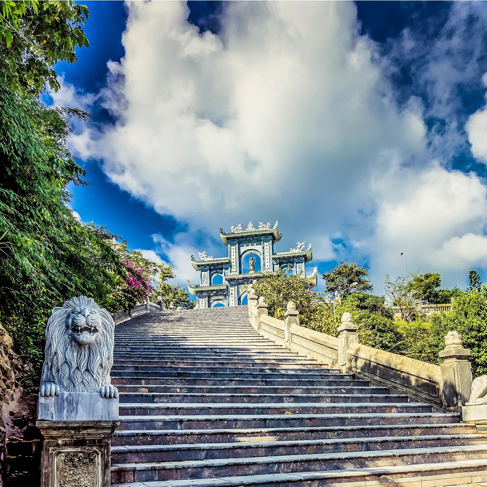
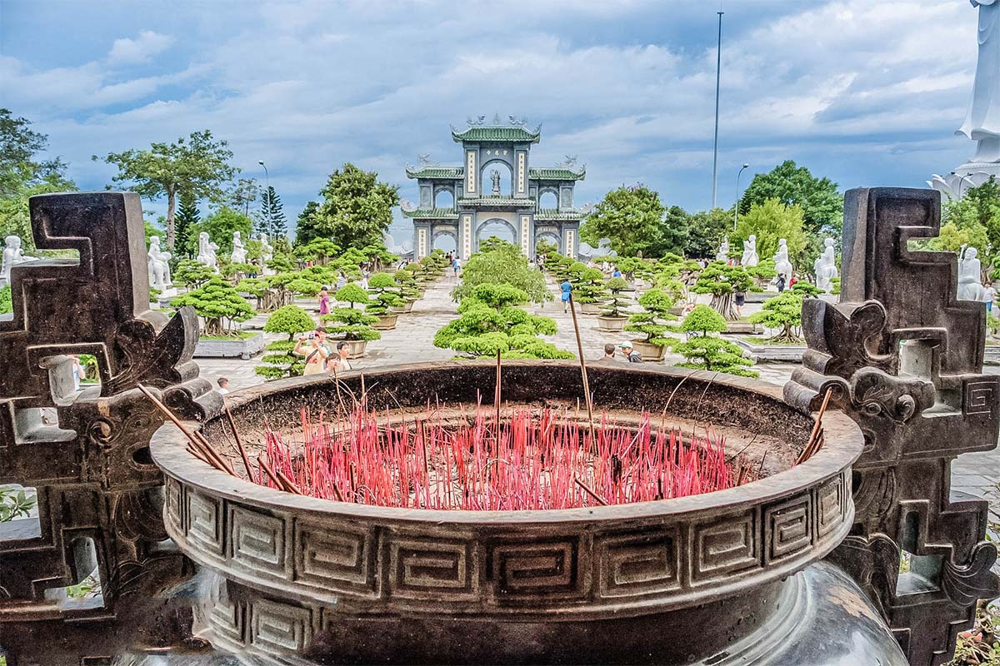
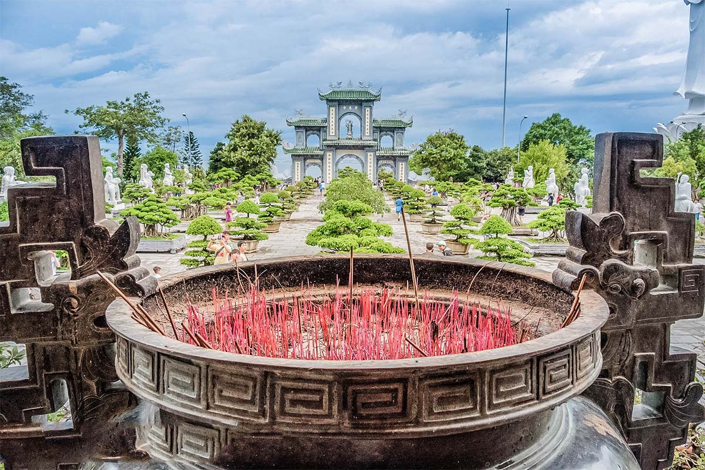
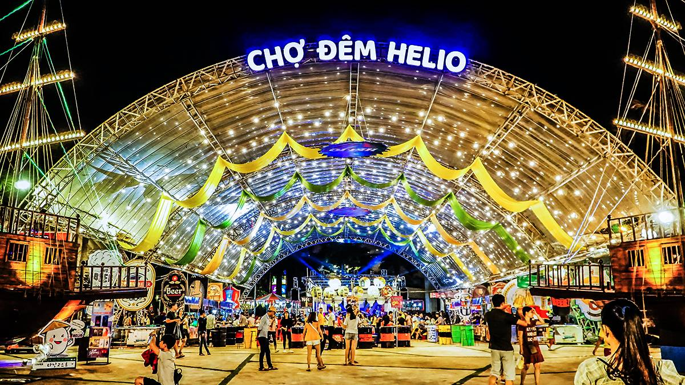
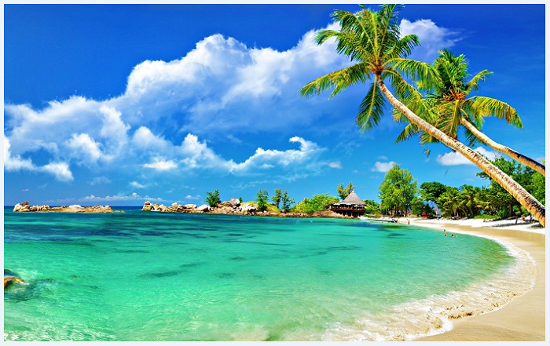

KHÁM PHÁ CHÙA LINH ỨNG-BÃI BỤT-ĐÀ NẴNG
CHÙA LINH ỨNG-BÃI BỤT
Chùa LINH ỨNG tọa lạc tại khu vực Bãi Bụt, bán đảo Sơn Trà, nằm cách trung tâm thành phố Đà Nẵng 10km về hướng Đông Bắc, do cố Hòa thượng Thích Thiện Nguyên khai sơn. Chùa được khởi công xây dựng ngày 04 tháng 7 năm 2004 ( nhằm ngày 19 tháng 6 năm Giáp Thân) và khánh thành ngày 30 tháng 7 năm 2010 ( nhằm ngày 19 tháng 6 năm Canh Dần).

Toàn cảnh Chùa nằm trên một địa hình vững chãi, một khung cảnh bao la: sau lưng là núi, trước mặt là biển, mang vẻ đẹp thiên nhiên hiếm thấy, khó có ngôi chùa nào có được:
Tương truyền, vào thời vua Minh Mạng triều Nguyễn, vào buổi sáng tinh sương, dân chài ven biển nơi đây tình cờ phát hiện một tượng Phật nhô lên khỏi mặt cát. Dân làng nghinh nước về, lập am thờ phụng. Và đặt tên cho vùng này là Bãi Bụt ( Phật). Từ đó, nơi này sóng yên biển lặng dân chài an ổn làm ăn.
Kết hợp giữa truyền thuyết và cảnh quan, Hòa Thượng đã phát khởi ý nguyện, nếu sau này có đủ nhân duyên thì sẽ tạo dựng nơi đây một cảnh Già Lam nghiệm tịnh. Và rồi, nhân duyên đó đã đến. Ngay sau khi Hòa Thượng xây dựng xong chùa Linh Ứng Bà Nà tại khu du lịch Bà Nà, thì cũng được TP Đà Nẵng cấp đất xây dựng chùa tại nơi đây (năm 2004).

Cảnh quan khu chánh điện kết hợp với pho tượng Bồ Tát Quan Âm…, tạo nên một bức tranh toàn cảnh thiêng thanh tịnh và trang nghiêm. Để tạo nên được cảnh đẹp này, có thể thấy được tâm huyết và sự đầu tư rất lớn của cố Hòa Thượng trụ trì trong việc xây dựng chùa.
Đến nay hầu hết các hạng mục công trình đều đã hoàn thành. Một công trình trọng điểm nữa mà cố Hòa Thượng trụ trì định thực hiện lúc sanh tiền là tôn tạo tượng đức Phật Thích Ca ngự tọa trên tòa sen cao 60m. Việc tôn tạo bức tượng này sẽ do vị kế thế trụ trì thực hiện trong tương lai gần khi hội đủ nhân duyên.
Chùa Linh Ứng- Bãi Bụt từ lâu đã là một trong những điểm đến tâm linh ưa thích của Phật tử và du khách thập phương trong và ngoài nước khi đến tham quan thành phố Đà Nẵng.
Chùa có một cảnh sắc thiên nhiên hùng vĩ, thơ mộng gắn liền với những câu chuyện truyền thuyết hấp dẫn, đây là một trong những yếu tố thu hút khách thập phương tham quan, chiêm bái. Khi đến chùa Linh Ứng- Bãi Bụt quý khách sẽ có cơ hội khám phá văn hóa Phật giáo cùng cảnh quan thiên nhiên và hệ sinh thái độc đáo nơi đây.
Tương truyền, vào thời vua Minh Mạng triều Nguyễn, vào buổi sáng tinh sương, dân chài ven biển nơi đây tình cờ phát hiện một tượng Phật nhô lên khỏi mặt cát. Dân làng nghinh nước về, lập am thờ phụng. Và đặt tên cho vùng này là Bãi Bụt ( Phật). Từ đó, nơi này sóng yên biển lặng dân chài an ổn làm ăn.
Kết hợp giữa truyền thuyết và cảnh quan, Hòa Thượng đã phát khởi ý nguyện, nếu sau này có đủ nhân duyên thì sẽ tạo dựng nơi đây một cảnh Già Lam nghiệm tịnh. Và rồi, nhân duyên đó đã đến. Ngay sau khi Hòa Thượng xây dựng xong chùa Linh Ứng Bà Nà tại khu du lịch Bà Nà, thì cũng được TP Đà Nẵng cấp đất xây dựng chùa tại nơi đây (năm 2004).

Cảnh quan khu chánh điện kết hợp với pho tượng Bồ Tát Quan Âm…, tạo nên một bức tranh toàn cảnh thiêng thanh tịnh và trang nghiêm. Để tạo nên được cảnh đẹp này, có thể thấy được tâm huyết và sự đầu tư rất lớn của cố Hòa Thượng trụ trì trong việc xây dựng chùa.
Đến nay hầu hết các hạng mục công trình đều đã hoàn thành. Một công trình trọng điểm nữa mà cố Hòa Thượng trụ trì định thực hiện lúc sanh tiền là tôn tạo tượng đức Phật Thích Ca ngự tọa trên tòa sen cao 60m. Việc tôn tạo bức tượng này sẽ do vị kế thế trụ trì thực hiện trong tương lai gần khi hội đủ nhân duyên.
Chùa Linh Ứng- Bãi Bụt từ lâu đã là một trong những điểm đến tâm linh ưa thích của Phật tử và du khách thập phương trong và ngoài nước khi đến tham quan thành phố Đà Nẵng.
Chùa có một cảnh sắc thiên nhiên hùng vĩ, thơ mộng gắn liền với những câu chuyện truyền thuyết hấp dẫn, đây là một trong những yếu tố thu hút khách thập phương tham quan, chiêm bái. Khi đến chùa Linh Ứng- Bãi Bụt quý khách sẽ có cơ hội khám phá văn hóa Phật giáo cùng cảnh quan thiên nhiên và hệ sinh thái độc đáo nơi đây.
Địa chỉ: Cách trung tâm tp.Đà Nẵng 10km về hướng Đông Bắc.
Xem bản đồ
Đánh Giá:
Những cây cầu
Các Ngôi Chùa
Điểm du lịch hấp dẫn
Có thể bạn quan tâm
Chinh phục núi Ngũ Hành Sơn nỗi tiếng Đà Nẵng.


Tìm hiểu ẩm thực chợ đêm helio Sơn Trà Đà Nẵng.
August 22, 2018

Có thể bạn chưa biết,nên đi du lịch biển vào thời điểm nào là đẹp nhất.
September 10, 2015